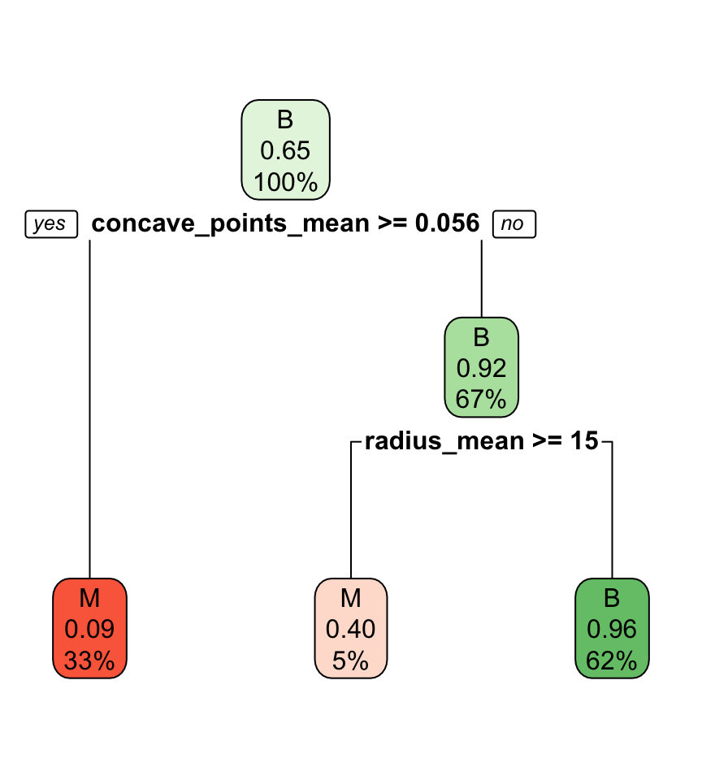
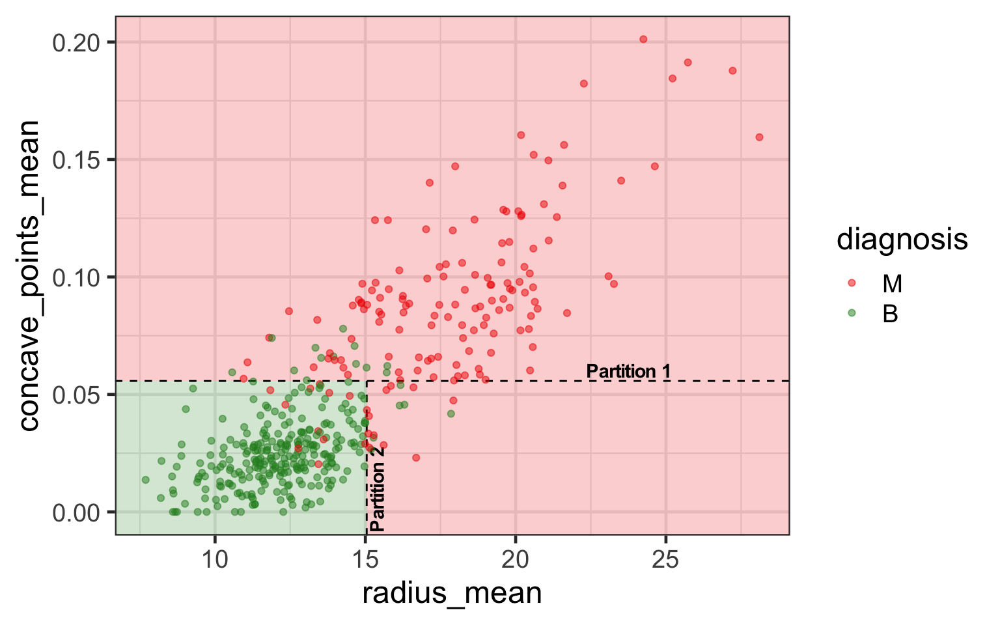
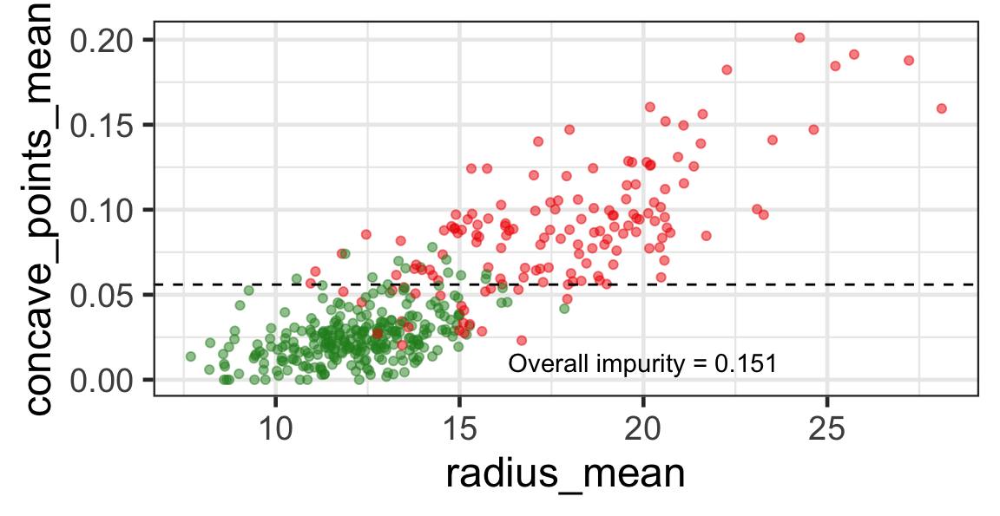

ETC3250/5250
Introduction to Machine Learning
Decision trees
Lecturer: Emi Tanaka
Department of Econometrics and Business Statistics
Classification trees
Classification tree
- In a classification tree we use a recursive two-way partition (or branches) of predictors.


Classification trees with R
- There are a number of R packages 📦 that can fit classification trees, e.g.
treeandrpart.
- Again, be sure to read the documentation and try fitting a model to toy data to check you know how it works.
Interpreting classification tree plot
- The rectangles are nodes that contain:
- class identifier,
- proportion of the reference class, and
- percentage of observations in node.
- The bottom rectangles are terminal nodes (or leaves).
- The bold text shows the splitting rules (branches).
- Colors indicate class, with a darker color indicating lower impurity.
Classifying new observations
Partition notation
- Suppose s is the value to split in variable j.
- Then we have two sets (or nodes):
- \color{#C8008F}{\mathcal{A}_L} = \{\{y_i, \boldsymbol{x}_i\}:x_{ij}<s\} and
- \color{#027EB6}{\mathcal{A}_R} = \{\{y_i, \boldsymbol{x}_i\}:x_{ij}\geq s\}.
- Different choices of j and s encode different partitions.
- Suppose p_{k\mathcal{A}} is the proportion of observations in class k in a set \mathcal{A}.
| \mathcal{A}_L | \mathcal{A}_R | |
|---|---|---|
| p_{M} | 10.2% (30) | 92.4% (121) |
| p_{B} | 89.8% (265) | 7.6% (10) |
Impurity metrics
- We need an algorithm to find the optimal \{j^*, s^*\}.
- Some popular impurity metrics are the:
- Gini index: f_{Gini}(\mathcal{A})= \sum_{k = 1}^K p_{k\mathcal{A}}(1 - p_{k\mathcal{A}}) = 1 - \sum_{k = 1}^K p_{k\mathcal{A}}^2
- entropy index: f_{entropy}(\mathcal{A}) = -\sum_{k = 1}^K p_{k\mathcal{A}}\log_2(p_{k\mathcal{A}}).
- Smaller values of the impurity index means higher purity.
- An overall impurity can be calculated from the weighted average: \frac{|\mathcal{A}_L|}{|\mathcal{A}_L| + |\mathcal{A}_R|}f(\mathcal{A}_L) + \frac{|\mathcal{A}_R|}{|\mathcal{A}_L| + |\mathcal{A}_R|}f(\mathcal{A}_R).
Example calculation of Gini impurity index
| \mathcal{A}_L | \mathcal{A}_R | |
|---|---|---|
| p_{M} | 10.2% (30) | 92.4% (121) |
| p_{B} | 89.8% (265) | 7.6% (10) |
- f_{Gini}(\mathcal{A}_L) = 1 - \frac{(30^2 + 265^2)}{(30 + 265)^2} \approx 0.183
- f_{Gini}(\mathcal{A}_R) = 1 - \frac{(121^2 + 10^2)}{(121 + 10)^2} \approx 0.141
- \text{Overall impurity} = \frac{30 + 265}{30 + 265 + 121 + 10} 0.183 + \frac{121 + 10}{30 + 265 + 121 + 10} 0.141 \approx 0.17
Search for the optimal partition
- The goal is to find j and s such that it minimises the overall impurity: \{j^*, s^*\} = \underset{j\in \{1, \dots, p\}, s \in \mathbb{R}}{\text{argmin}}~\text{Overall impurity}(\mathcal{A}_L, \mathcal{A}_R).
Selected partition

- Selected predictor: j^* = \texttt{concave\_points\_mean}
- Selected threshold: s^* = 0.056
Search for the next optimal partition
- We find the next j and s such that it minimises the overall impurity for the partitioned subset.
- We repeat again for the next subset and so on …
until we reach the stopping rule.
Stopping rules
- The partitioning will be recursively applied until it meets the selected stopping rule.
- Some stopping rules in
rpart.control()include:minsplit: the minimum number of observations in any non-terminal node.minbucket: the minimum number of observations allowed in a terminal node.cp: complexity parameter – minimum difference between impurity values required to continue splitting.
Changing the stopping rules in rpart
Algorithm in a nutshell
- Start with all observations in a single set.
- Sort values on first variable.
- Compute overall impurity for all possible partitions into two sets.
- Choose the best partition on this variable.
- Repeat 2-4 for all other variables.
- Choose the best partition among all variables. Your data is now split into two subsets.
- Repeat 1-6 on each subset.
- Stop when stopping rule is achieved.
Tuning parameters: search space
- First we define the search space of the parameters.
search_df <- expand_grid(minbucket = seq(10, 100, length.out = 4),
minsplit = seq(10, 100, length.out = 4),
cp = seq(0, 1, length.out = 50))
search_df# A tibble: 800 × 3
minbucket minsplit cp
<dbl> <dbl> <dbl>
1 10 10 0
2 10 10 0.0204
3 10 10 0.0408
4 10 10 0.0612
5 10 10 0.0816
6 10 10 0.102
7 10 10 0.122
8 10 10 0.143
9 10 10 0.163
10 10 10 0.184
# ℹ 790 more rowsTuning parameters: fit and predict
scroll
library(yardstick)
set.seed(2023)
cancer_folds <- cancer_train %>%
vfold_cv(v = 5)
search_res <- cancer_folds %>%
mutate(search = map(splits, function(asplit) {
search_df %>%
rowwise() %>%
# fit the model for each row
# different row contains unique combination of
# minbucket, minsplit, and cp
mutate(fit = list(rpart(diagnosis ~ radius_mean + concave_points_mean,
data = training(asplit), method = "class",
control = rpart.control(minbucket = .data$minbucket,
minsplit = .data$minsplit,
cp = .data$cp)))) %>%
ungroup() %>%
# compute classification metric on validation fold
mutate(metrics = map(fit, function(afit) {
# get validation fold
testing(asplit) %>%
# predict from fitted model for this validation fold
mutate(pred = predict(afit, ., type = "class")) %>%
# get classification metrics
metric_set(accuracy, bal_accuracy, kap)(., truth = diagnosis, estimate = pred)
})) %>%
unnest(metrics) %>%
select(-c(fit, .estimator))
})) %>%
unnest(search)
# summarise the data for easy view
search_res_summary <- search_res %>%
group_by(minbucket, minsplit, cp, .metric) %>%
summarise(mean = mean(.estimate),
sd = sd(.estimate))
search_res_summary# A tibble: 2,400 × 6
# Groups: minbucket, minsplit, cp [800]
minbucket minsplit cp .metric mean sd
<dbl> <dbl> <dbl> <chr> <dbl> <dbl>
1 10 10 0 accuracy 0.906 0.0275
2 10 10 0 bal_accuracy 0.896 0.0366
3 10 10 0 kap 0.794 0.0583
4 10 10 0.0204 accuracy 0.904 0.0409
5 10 10 0.0204 bal_accuracy 0.900 0.0417
6 10 10 0.0204 kap 0.792 0.0864
7 10 10 0.0408 accuracy 0.897 0.0314
8 10 10 0.0408 bal_accuracy 0.886 0.0260
9 10 10 0.0408 kap 0.774 0.0633
10 10 10 0.0612 accuracy 0.899 0.0306
# ℹ 2,390 more rowsTuning parameters: results
Code
| minbucket | minsplit | cp | .metric | mean | sd |
|---|---|---|---|---|---|
| 10 | 10 | 0.0000000 | accuracy | 0.9061286 | 0.0274646 |
| 10 | 10 | 0.0000000 | kap | 0.7935643 | 0.0583496 |
| 10 | 10 | 0.0204082 | bal_accuracy | 0.9004277 | 0.0417005 |
minbucketandminsplitdoesn’t seem to make much difference (for the range searched at least).cp = 0seems sufficient in this case.
Tuning cp with cross validation error in rpart
rpartautomatically stores the cross validation error in the resulting model object
fit <- rpart(diagnosis ~ radius_mean + concave_points_mean,
data = cancer_train, method = "class",
control = rpart.control(cp = 0, xval = 10)) # 10 folds (default)
fit$cptable CP nsplit rel error xerror xstd
1 0.768211921 0 1.0000000 1.0000000 0.06538424
2 0.026490066 1 0.2317881 0.2781457 0.04074821
3 0.006622517 2 0.2052980 0.2715232 0.04031258
4 0.000000000 3 0.1986755 0.2847682 0.04117673rel erroris the in-sample error (always decreases with more split)xerroris the cross-validation errorxstdis the standard deviation of the cross-validation error
Bank marketing data
scroll
- This data found here contains direct marketing campaigns of a Portuguese banking institution.
- 🎯 The goal is to predict if the client will subscribe to a term deposit (
y="yes"or"no").
library(tidyverse)
bank <- read_delim("https://emitanaka.org/iml/data/bank-full.csv", delim = ";")
skimr::skim(bank)| Name | bank |
| Number of rows | 45211 |
| Number of columns | 17 |
| _______________________ | |
| Column type frequency: | |
| character | 10 |
| numeric | 7 |
| ________________________ | |
| Group variables | None |
Variable type: character
| skim_variable | n_missing | complete_rate | min | max | empty | n_unique | whitespace |
|---|---|---|---|---|---|---|---|
| job | 0 | 1 | 6 | 13 | 0 | 12 | 0 |
| marital | 0 | 1 | 6 | 8 | 0 | 3 | 0 |
| education | 0 | 1 | 7 | 9 | 0 | 4 | 0 |
| default | 0 | 1 | 2 | 3 | 0 | 2 | 0 |
| housing | 0 | 1 | 2 | 3 | 0 | 2 | 0 |
| loan | 0 | 1 | 2 | 3 | 0 | 2 | 0 |
| contact | 0 | 1 | 7 | 9 | 0 | 3 | 0 |
| month | 0 | 1 | 3 | 3 | 0 | 12 | 0 |
| poutcome | 0 | 1 | 5 | 7 | 0 | 4 | 0 |
| y | 0 | 1 | 2 | 3 | 0 | 2 | 0 |
Variable type: numeric
| skim_variable | n_missing | complete_rate | mean | sd | p0 | p25 | p50 | p75 | p100 | hist |
|---|---|---|---|---|---|---|---|---|---|---|
| age | 0 | 1 | 40.94 | 10.62 | 18 | 33 | 39 | 48 | 95 | ▅▇▃▁▁ |
| balance | 0 | 1 | 1362.27 | 3044.77 | -8019 | 72 | 448 | 1428 | 102127 | ▇▁▁▁▁ |
| day | 0 | 1 | 15.81 | 8.32 | 1 | 8 | 16 | 21 | 31 | ▇▆▇▆▆ |
| duration | 0 | 1 | 258.16 | 257.53 | 0 | 103 | 180 | 319 | 4918 | ▇▁▁▁▁ |
| campaign | 0 | 1 | 2.76 | 3.10 | 1 | 1 | 2 | 3 | 63 | ▇▁▁▁▁ |
| pdays | 0 | 1 | 40.20 | 100.13 | -1 | -1 | -1 | -1 | 871 | ▇▁▁▁▁ |
| previous | 0 | 1 | 0.58 | 2.30 | 0 | 0 | 0 | 0 | 275 | ▇▁▁▁▁ |
Fitting and visualising the model
duration is omitted as a predictor in the model as it is computed based on the response.
- How are partitions determined for categorical variables?
Partitions for categorical variables
- When the variable is a categorical variable, the partition of observations is based on whether it belongs to a particular class or not.
- E.g., there are 4 classes for
poutcomeand so 4 overall impurities are calculated, one for each class vs other.
Benefits of classification trees
- The decision rules provided by trees are easy to explain and follow.
- Trees search for optimal overall impurity independently for each predictor, therefore missing values in predictors can be better handled in trees.
- Trees:
- can handle a mix of predictor types, categorical and quantitative,
- are robust to outliers,
- can capture non-linear relationships,
- invariant to transformations of predictors (as it is based on ordering).
Limitations of classification trees
- Trees cannot model interaction between predictors.
- The algorithm is greedy!
- This can result in a local optimal solution.
- It can often overfit the data (i.e. have high variance).
- When separation is in linear combinations of variables trees struggle to provide a good classification.
Regression tree
Insurance cost
scroll
- Recall this data sourced from the Medical Cost Personal Datasets in Week 2.
library(tidyverse)
insurance <- read_csv("https://emitanaka.org/iml/data/insurance.csv")
skimr::skim(insurance)| Name | insurance |
| Number of rows | 1338 |
| Number of columns | 7 |
| _______________________ | |
| Column type frequency: | |
| character | 3 |
| numeric | 4 |
| ________________________ | |
| Group variables | None |
Variable type: character
| skim_variable | n_missing | complete_rate | min | max | empty | n_unique | whitespace |
|---|---|---|---|---|---|---|---|
| sex | 0 | 1 | 4 | 6 | 0 | 2 | 0 |
| smoker | 0 | 1 | 2 | 3 | 0 | 2 | 0 |
| region | 0 | 1 | 9 | 9 | 0 | 4 | 0 |
Variable type: numeric
| skim_variable | n_missing | complete_rate | mean | sd | p0 | p25 | p50 | p75 | p100 | hist |
|---|---|---|---|---|---|---|---|---|---|---|
| age | 0 | 1 | 39.21 | 14.05 | 18.00 | 27.00 | 39.00 | 51.00 | 64.00 | ▇▅▅▆▆ |
| bmi | 0 | 1 | 30.66 | 6.10 | 15.96 | 26.30 | 30.40 | 34.69 | 53.13 | ▂▇▇▂■|
| children | 0 | 1 | 1.09 | 1.21 | 0.00 | 0.00 | 1.00 | 2.00 | 5.00 | ▇▂▂▁▁ |
| charges | 0 | 1 | 13270.42 | 12110.01 | 1121.87 | 4740.29 | 9382.03 | 16639.91 | 63770.43 | ▇▂▁▁▁ |
Fitting regression tree with R
Interpreting regression tree plot

- The nodes contain:
- average of the response, and
- percentage of observations in node.
- The bold text shows the splitting rules (branches).
- Colors indicate class, with a darker color indicating lower impurity.
- The prediction is the average of the response in the terminal node.
Partition based on a binary predictor
- For a binary variable, \mathcal{A}_L and \mathcal{A}_R is based on its class.
- Then find the average responses, \bar{y}_L and \bar{y}_R, for \mathcal{A}_L and \mathcal{A}_R, respectively.
- We can use the residual sum of squares, e.g. \text{RSS}(\mathcal{A}_L) = \sum_{i \in \mathcal{A}_L}(y_i - \bar{y}_L)^2, to measure the impurity.
- The overall impurity is \text{RSS}(\mathcal{A}_L) + \text{RSS}(\mathcal{A}_R) = 74.6\text{B}.
Partition based on a quantitative predictor
- Like for classification trees, a quantitative predictor is partitioned based on the split value.
- The overall impurity is based on a combined impurity measure for quantitative response (RSS here).

Pruning
- We can grow a tree, T_0, and then prune it to a shorter tree (T_1).

Pruning to optimal cp based on xerror
scroll
- We can select optimal
cpbased onxerror
# A tibble: 86 × 5
CP nsplit `rel error` xerror xstd
<dbl> <dbl> <dbl> <dbl> <dbl>
1 0.620 0 1 1.00 0.0519
2 0.144 1 0.380 0.382 0.0190
3 0.0637 2 0.236 0.239 0.0145
4 0.00967 3 0.173 0.178 0.0133
5 0.00784 4 0.163 0.172 0.0135
6 0.00712 5 0.155 0.165 0.0131
7 0.00537 6 0.148 0.157 0.0131
8 0.00196 7 0.143 0.153 0.0132
9 0.00190 8 0.141 0.156 0.0133
10 0.00173 9 0.139 0.154 0.0132
# ℹ 76 more rowsoptimal_cp <- T0$cptable %>%
as.data.frame() %>%
filter(xerror == min(xerror)) %>%
# if multiple optimal points, then select one
slice(1) %>%
pull(CP)
optimal_cp[1] 0.0009125473Decision tree algorithm
- Top-down: it begins at the top of the tree (all observations belong to a single region) and then successively splits the predictor space; each split is indicated via two new branches further down on the tree.
- Greedy: at each step of the tree-building process, the best split is made at that particular step, rather than looking ahead and picking a split that will lead to a better tree in some future step.
Takeaway
- Tree-based models consist of one or more of nested conditions for the predictors that partition the data.
- Decision trees can be used for both regression and classification problems.
- Decision trees used for:
- classification problems is referred to as classification trees, and
- regression problems is referred to as regression trees.

ETC3250/5250 Week 5